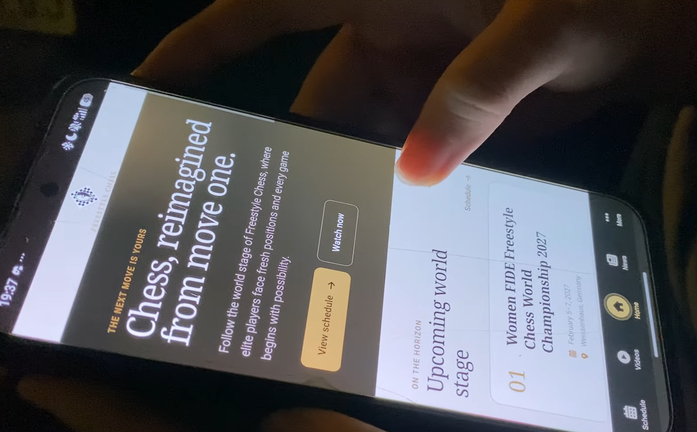
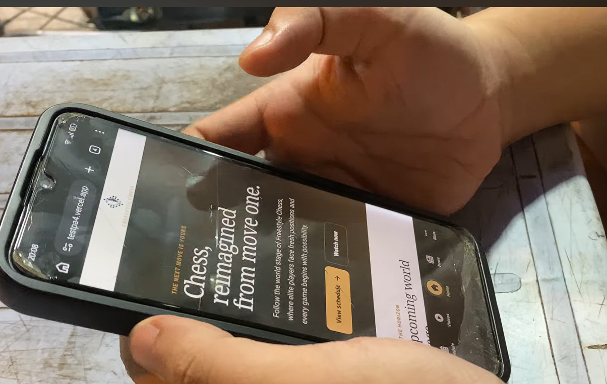
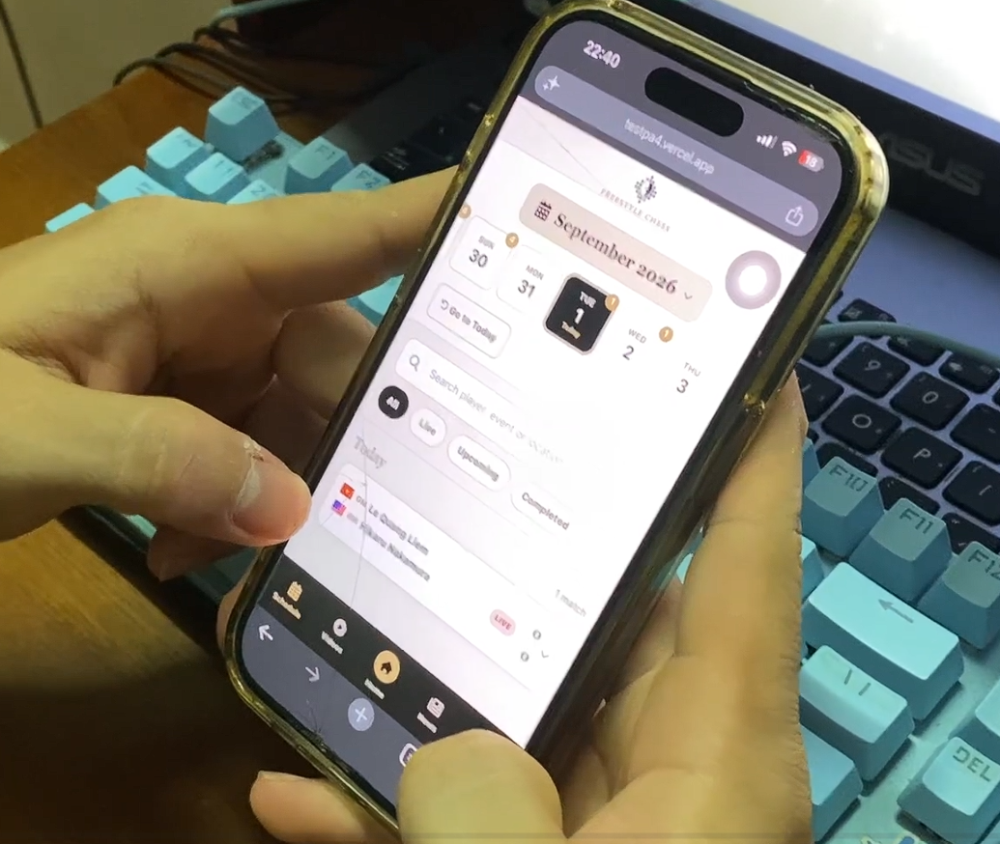
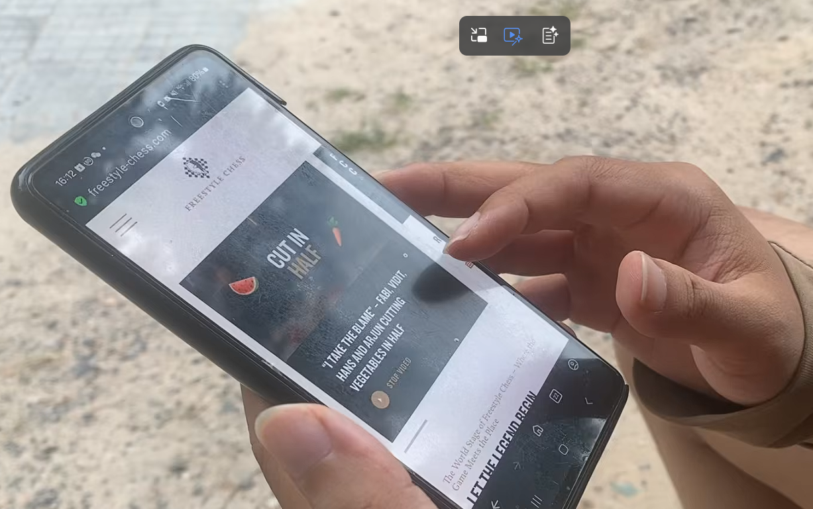
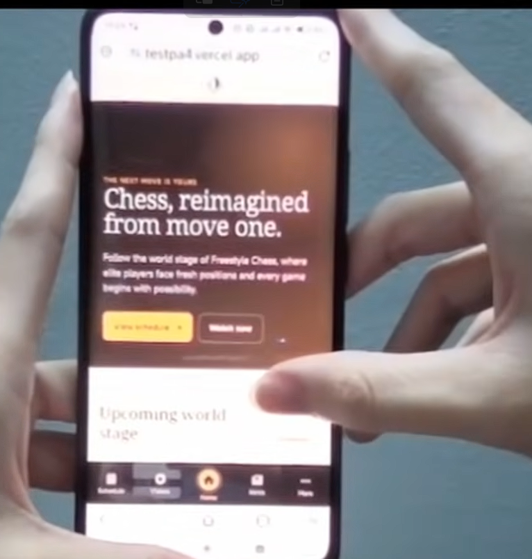
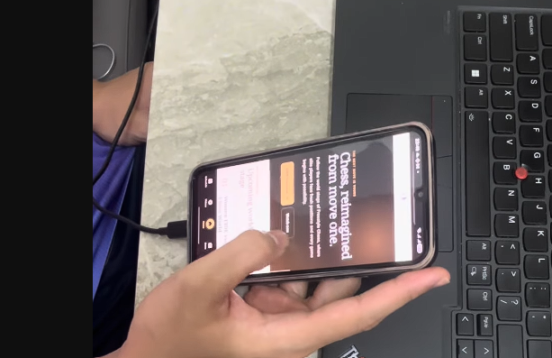

Group 06 · Class 23KTMP2 · CSC13112 UI/UX Design
Freestyle Chess,
designed for the next move.
From PA3 Formative Evidence to a High-Fidelity Mobile Experience
& Summative Study
PA4 · Final Prototype & Summative Study2026
PA4 · Presentation Flow
Agenda
01
Problem Framing
Two mobile usability gaps on existing website
02
Selected Solutions
Nav-1 and Sch-2 from PA3 formative testing
03
Hi-fi Prototype & Demo
Interactive web prototype & 4-minute live run
04
Summative User Study
Within-subjects counterbalanced comparison (N=6)
05
Conclusion & Next Steps
Validated hypotheses & design implications
PA4 · presentation flow02 / 15
01
PA3 · Formative testing
Two usability problems were explored through six alternatives.
-
P-01 · One-handed navigationReach News and Schedule with the thumb while walking.
-
P-05 · Schedule lookupFind a date, inspect players and open match analysis.
6paper variants
3participants
2task scenarios
Between-subjects · non-intervention03 / 16
Selected solution 1 · P-01
Winner · Nav-1
FIXED
BOTTOM NAV
Direct one-tap access
Persistent labels
Natural thumb reach
“Bottom Nav is effortless; my thumb rests right there
naturally.”
 ＋Insert PA3 Nav-1 sketchClick or drop PNG/JPG
＋Insert PA3 Nav-1 sketchClick or drop PNG/JPG
Navigation winner04 / 16
Selected solution 2 · P-05
Winner · Sch-2
DATE STRIP
+ DETAIL
Rapid date filtering
Clear hierarchy
Dedicated 8×8 analysis
“The date strip is intuitive; the analysis screen feels
professional.”
 ＋Insert PA3 Sch-2 sketchClick or drop PNG/JPG
＋Insert PA3 Sch-2 sketchClick or drop PNG/JPG
Schedule winner05 / 16
02
PA3 → PA4
Four observed breakdowns became four design commitments.
01
48×48 px targets
Safe navigation, toggles and detail actions.
02
Explicit back controls
Keep users in control on nested screens.
03
Search + filter chips
Find players and match states without long scrolling.
04
Visible feedback
Active states and transitions under 250 ms.
Every improvement traces to PA306 / 16
Hi-fi design direction
Each PA3 finding became working behavior.
Hidden navigationFAB and full-screen menu
→
Persistent bottom navigationActive state and one-tap access
Long schedule browsingTimeline scrolling fatigue
→
Date strip, picker, search, filtersDirect routes to a match
Exit uncertaintyNested detail screen
→
Back action + preserved stateReturn to the same schedule context
Paper interactionsStates switched manually
→
Responsive coded behaviorReact, TypeScript, realistic content
React + TypeScript + Vite07 / 16
Hi-fi prototype · Overview
One core journey across three connected screens.
 ＋Home screenshot
＋Home screenshot
Home
Entry and featured content
 ＋Schedule screenshot
＋Schedule screenshot
Schedule
Date, search, filters, matches
 ＋Match Detail screenshot
＋Match Detail screenshot
Match Detail
Players, games, chessboard
Home → Schedule → Match Detail08 / 16
Hi-fi demo · Screen 1
Home keeps navigation within reach.
- Realistic Freestyle Chess content.
- Direct “View schedule” action.
- Persistent five-tab navigation.
- Visible active state and ≥48 px targets.
Route: #/
 ＋Insert Home screenshotPortrait crop recommended
＋Insert Home screenshotPortrait crop recommended
Replaceable demo frame09 / 16
Hi-fi demo · Screen 2
Schedule replaces scrolling friction with direct retrieval.
- Scrollable date strip plus picker.
- Search by player, event or location.
- Live, upcoming and completed filters.
- Expandable cards and clear detail action.
Route: #/schedule
 ＋Insert Schedule screenshotShow a selected date and open match
＋Insert Schedule screenshotShow a selected date and open match
Replaceable demo frame10 / 16
Hi-fi demo · Screen 3
Match Detail preserves context and rewards exploration.
- Explicit Back with schedule state preserved.
- Player identity, Elo, score and status.
- Expandable game archive.
- Embedded 8×8 Chess.com board.
Route: #/schedule/:matchId
 ＋Insert Match Detail screenshotShow player info and board
＋Insert Match Detail screenshotShow player info and board
Replaceable demo frame11 / 16
03
Summative user study · Design
Five participants compare the prototype with the current website.
5
Participants
Minimum required sample.
A/B
Within-subjects
Everyone uses both systems.
AB/BA
Counterbalanced
Alternate order to reduce learning.
20′
Per session
Every session is recorded.
Baseline: freestylechess.com mobile web
Summative comparison12 / 16
User study · Tasks & measures
The study re-tests the same core needs at higher fidelity.
TASK 01 · NAVIGATION
Open Schedule with one hand.
Success: reach Schedule without assistance.
TASK 02 · MATCH LOOKUP
Find the target date and open the board.
Success: reach Match Detail and view the board.
Consent + profile→System A
tasks→SUS + Likert→Break→System B
tasks→Interview
Measures: Completion Time · Success · Errors · SUS · Satisfaction
Same needs · stronger evidence11 / 16
Requirement 2 · Empirical Testing Evidence
Real-world user testing sessions in action
Prototype · P01

One-Handed Reach
Thumb easily activates "View schedule" CTA and Bottom Nav
without shifting grip.
Android · Handheld
Prototype · P02

Outdoor Field Test
Natural daylight test on live Vercel URL; warm
palette ensures instant readability.
Android · Outdoor
Prototype · P03

iOS Date Strip
Smooth swipe to 16 Aug and rapid match expansion
(Carlsen vs Lê Quang Liêm).
iPhone · Desktop Lab
Prototype · P04

Day-by-Day View
Linear date listing optimized small match inspection without deep scrolling.
Android · Outdoor
Prototype · P05

Bottom Nav Flow
Instant tab switching via persistent 5-tab bar with
zero slip errors (Order B → A).
Android · Session 5
Prototype · P06

Direct Task Mastery
Mastered in 30s; completed Task 2 in 12.0s (vs 120s+ on baseline) with 1 hand.
Android · Portrait
Empirical proof · In-situ photo evidence12 / 17
User study · Results
Replace the placeholders with measured outcomes.
—%
Completion time change
—%
Prototype success rate
—/100
Prototype SUS score
 ＋Insert results chartTCT, success, errors, SUS or Likert
＋Insert results chartTCT, success, errors, SUS or Likert
Write the main finding here.
Explain what changed, which task drove the difference, and
whether the evidence supports the design decision.
Click text to edit · report n and method
Editable result placeholders14 / 16
User study · What users said
Pair the numbers with observed behavior and participant voice.
 ＋Insert testing photo or affinity map
＋Insert testing photo or affinity map
“Replace with a quote about navigation or one-handed use.”
Participant P—
“Replace with a quote about date search or Match Detail.”
Participant P—
Next improvement: describe the most important issue
discovered.
Evidence, not decoration15 / 16
Conclusion
We carried evidence through the entire design cycle.
01
Selected with evidence
Nav-1 and Sch-2 address observed mobile needs.
02
Built as behavior
The coded prototype makes the core journey realistic.
03
Validated with users
Results determine what worked and what improves next.
Group 06 · Freestyle Chess Mobile Web16 / 16